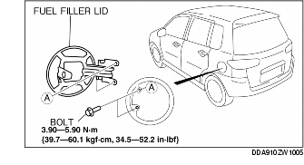

Fuel-filler lid removal/installation
1. Remove the bolt.

2. Remove the fuel-filler lid.
3. Install in the reverse order of removal.
4. Adjust the fuel-filler lid. (See FUEL-FILLER LID ADJUSTMENT.)
1. Remove the bolt.

2. Remove the fuel-filler lid.
3. Install in the reverse order of removal.
4. Adjust the fuel-filler lid. (See FUEL-FILLER LID ADJUSTMENT.)